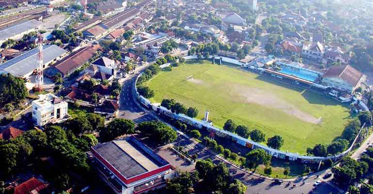
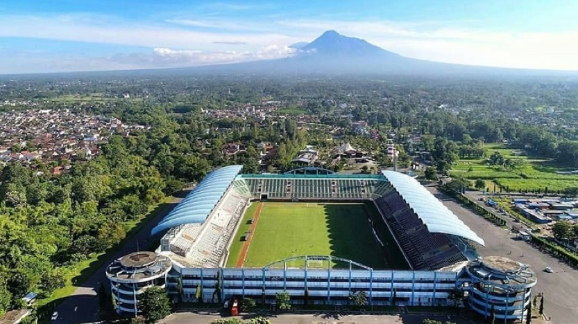
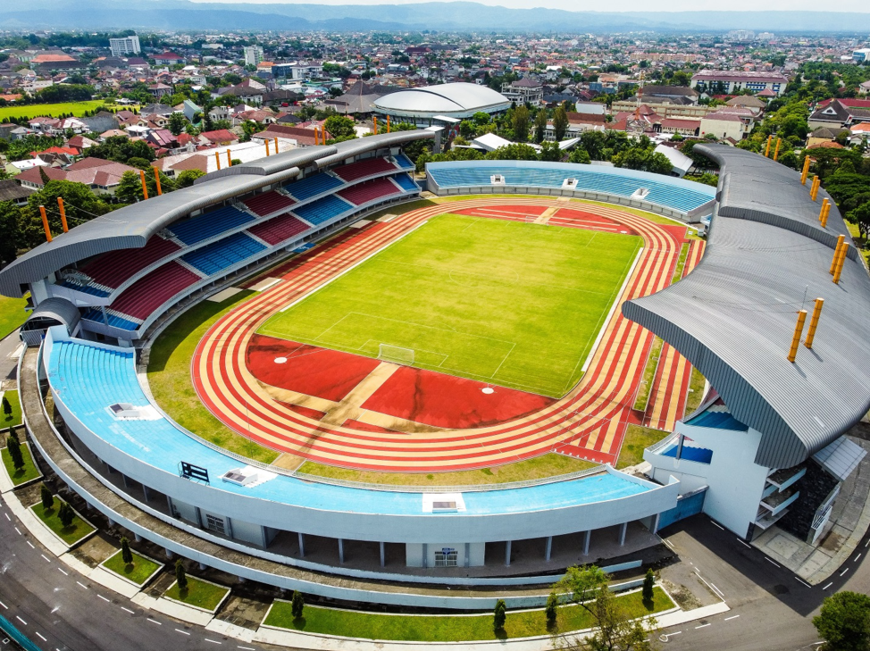
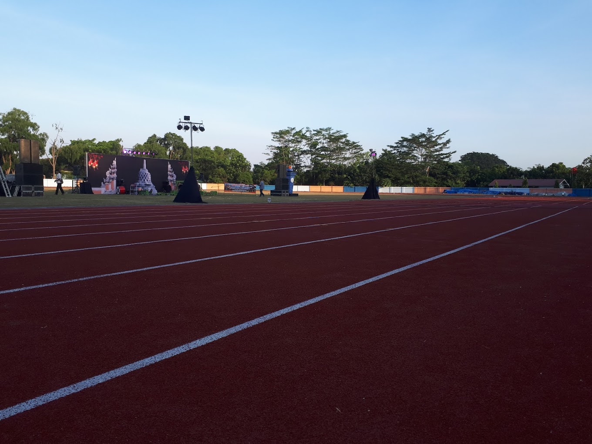
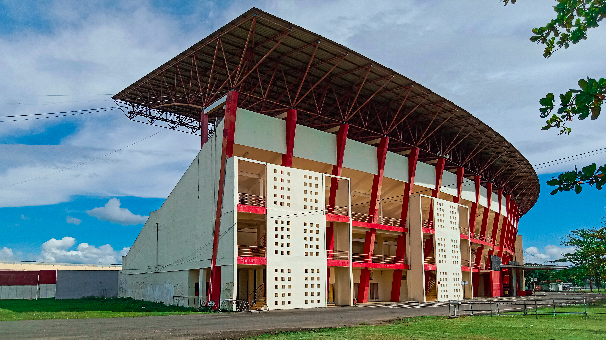

<!DOCTYPE html>
<html>
  <head>
    <title>Lokasi Stadion di DIY</title>

    <link rel="stylesheet" href="https://unpkg.com/leaflet@1.9.4/dist/leaflet.css" integrity="sha256-p4NxAoJBhIIN+hmNHrzRCf9tD/miZyoHS5obTRR9BMY=" crossorigin="" />
    <script src="https://unpkg.com/leaflet@1.9.4/dist/leaflet.js" integrity="sha256-20nQCchB9co0qIjJZRGuk2/Z9VM+kNiyxNV1lvTlZBo=" crossorigin=""></script>

    <link href="https://cdn.jsdelivr.net/npm/bootstrap@5.3.1/dist/css/bootstrap.min.css" rel="stylesheet" integrity="sha384-4bw+/aepP/YC94hEpVNVgiZdgIC5+VKNBQNGCHeKRQN+PtmoHDEXuppvnDJzQIu9" crossorigin="anonymous" />
    <nav class="navbar navbar-expand-lg navbar-dark shadow-sm fixed-top" style="background-color: #c08261">
      <div class="container">
        <a class="navbar-brand" href="#">
          
        </a>
        <a class="navbar-brand" href="#">Peta Lokasi Stadion di DIY</a>
        <button class="navbar-toggler" type="button" data-bs-toggle="collapse" data-bs-target="#navbarNavDropdown" aria-controls="navbarNavDropdown" aria-expanded="false" aria-label="Toggle navigation">
          <span class="navbar-toggler-icon"></span>
        </button>
        <div class="collapse navbar-collapse" id="navbarNavDropdown">
          <ul class="navbar-nav ms-auto"></ul>
        </div>
      </div>
    </nav>
    <style>
      html,
      body,
      section {
        position: relative;
        height: 100%;
        background-color: rgb(181, 120, 120);
      }

      html {
        scroll-behavior: smooth;
      }

      #map {
        width: 2000px;
        height: 1000px;
        margin-top: 60px;
      }
    </style>
  </head>

  <body>
    <center>
      <div id="map"></div>
    </center>
    <script>
      var bgnIcon = L.icon({
        iconUrl: "https://www.pngall.com/wp-content/uploads/9/Vector-Stadium-Transparent.png",
        iconSize: [50, 50],
        iconAnchor: [20, 50],
        popupAnchor: [0, 0],
      });

      var kridosono = L.marker([-7.787731, 110.374056], { icon: bgnIcon }).bindPopup(
          '<center></center><h3>Stadion Kridosono</h3>'
        ),
        pancasila = L.marker([-7.769363, 110.384748], { icon: bgnIcon }).bindPopup(
          '<center></center><h3>Stadion Pancasila</h3>'
        ),
        maguwoharjo = L.marker([-7.750629, 110.418164], { icon: bgnIcon }).bindPopup(
          '<center></center><h3>Stadion Maguwoharjo</h3>'
        ),
        uny = L.marker([-7.77669, 110.38557], { icon: bgnIcon }).bindPopup('<center></center><h3>Stadion UNY</h3>'),
        mandala = L.marker([-7.796071, 110.384271], { icon: bgnIcon }).bindPopup(
          '<center></center><h3>Stadion Mandala Krida</h3>'
        ),
        adisucipto = L.marker([-7.800351, 110.435848], { icon: bgnIcon }).bindPopup(
          '<center></center><h3>Stadion Agustinus Adi Sucipto</h3>'
        ),
        sultan = L.marker([-7.875346, 110.380294], { icon: bgnIcon }).bindPopup(
          '<center></center><h3>Stadion Sultan Agung</h3>'
        );

      var bgn = L.layerGroup([kridosono, pancasila, maguwoharjo, uny, mandala, adisucipto, sultan]);

      var osm = L.tileLayer("https://tile.openstreetmap.org/{z}/{x}/{y}.png", {
        maxZoom: 20,
        attribution: "© OpenStreetMap",
      });

      var osm2 = L.tileLayer("https://mt0.google.com/vt/lyrs=s&x={x}&y={y}&z={z}", {
        maxZoom: 20,
        attribution: '&copy; <a href="http://osm.org/copyright">OpenStreetMap</a> contributors',
      });

      var map = L.map("map", {
        center: [-7.794074, 110.398421],
        zoom: 14,
        layers: [osm, bgn],
      });

      var baseMaps = {
        OpenStreetMap: osm,
        "OpenStreetMap.maps": osm2,
      };

      var overlayMaps = {
        Stadion: bgn,
      };

      var layerControl = L.control.layers(baseMaps, overlayMaps).addTo(map);
      var baseMaps = {
        OpenStreetMap: osm,
        "<span style='color: red'>OpenStreetMap.maps</span>": osm2,
      };
    </script>
  </body>
</html>
